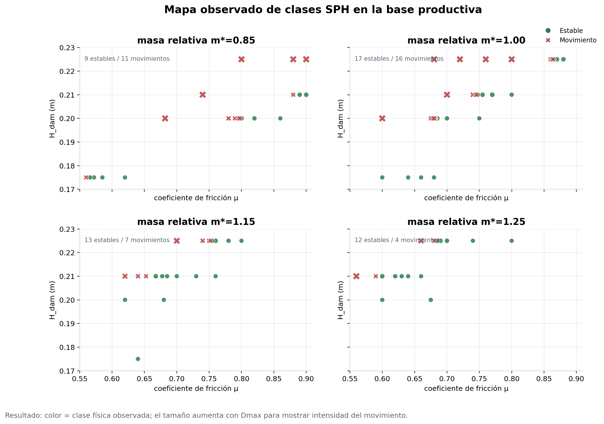
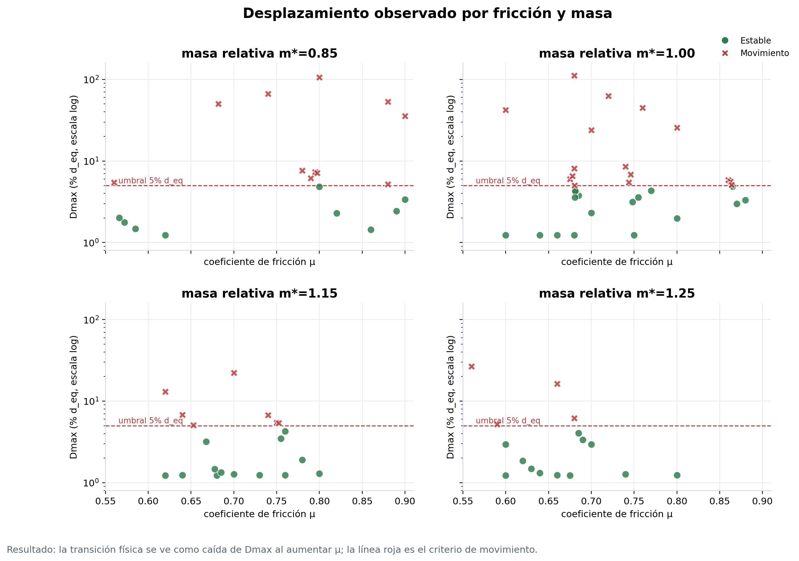
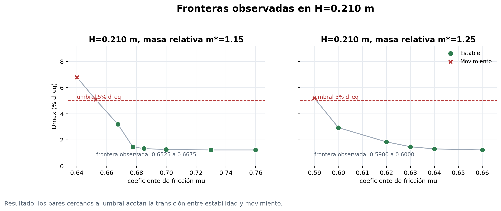

Resultados SPH de estabilidad
Evidencia observada de movimiento y estabilidad para construir la frontera física principal.
Resultado observado
- Casos SPH usados
- 89 base dp=0.003
- Estables / movimiento
- 51/38 criterio Dmax
- Frontera H=0.210
- cerrada dos masas relativas
- Criterio
- 5% d_eq desplazamiento máximo
- Caso más cercano
- 0.02% d_eq distancia al umbral
Los resultados SPH muestran la frontera física observada antes de cualquier interpolación: al aumentar la fricción, el desplazamiento máximo disminuye y los casos pasan de movimiento a estabilidad. Esta página muestra la evidencia directa; el GP y la sensibilidad de resolución se muestran en pestañas separadas.
Mapa global observado


Zoom de frontera
